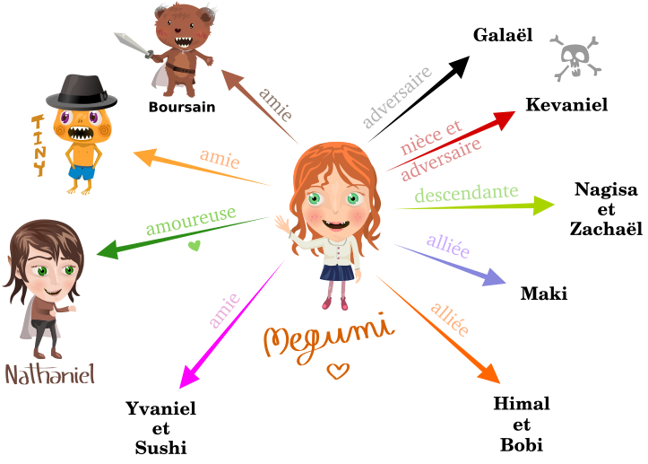

J’ai une idée… Qu’est-ce que j’en fais ?! 2/2
Édité le 09 mai 2016
Après avoir établi notre schéma narratif (en laissant très probablement un trou béant au niveau des péripéties…), nous pouvons nous lancer dans les fiches des personnages !
Ce n’est bien sûr pas obligatoire et certains n’en ont absolument pas besoin. Mais si, comme moi, il vous arrive de changer le physique ou le caractère de vos personnages en cours de route, parce que ça collera finalement mieux avec l’histoire, il vaut mieux avoir une fiche sous la main pour repérer tout de suite les éléments à modifier.
Établir une « fiche personnage »
Nous savons de quoi traite l’histoire, nous y avons longuement réfléchi, et à priori, nous savons aussi combien il y a de personnages principaux, quels rôles ils vont jouer et si des personnages secondaires vont apparaitre à leur coté. Il nous faut donc commencer par établir la fiche détaillée des personnages.
Le nom
Il est parfois compliqué de trouver LE nom qui nous plait pour nos personnages principaux. Le mieux, c’est déjà de noter le premier nom/prénom qui nous est venu (même si on y a pensé pendant trois mois !), et il y a des chances qu’il change par la suite :)
Parfois, le nom finit par se transformer en fonction de leur personnalité ou de l’univers dans lequel ils évoluent. On peut aussi, dans cette partie, se pencher sur un pseudonyme (en fonction de leur histoire passée par exemple).
Les caractéristiques physiques
C’est là qu’il faut se demander si la jeune fille aura les cheveux bruns ou blonds (ou autre, pourquoi pas…), si ses yeux sont grands et verts ou plutôt bridés et noirs, si elle a une cicatrice ou une tâche de naissance… Bref, on liste toutes les caractéristiques des personnages.
Ces détails physiques serviront parfois à les identifier dans le récit, ou encore à les désigner pour éviter des répétitions.
Les autres particularités
- un tic de langage (comme Tiny dans mon Megumi - Les Monts Enchantés)
- un caractère particulier (colérique, bon samaritain, naïf…)
- de la force
- de l’intelligence
- du courage
- une maitrise de soi hors norme
- une confiance en soi (la manière dont le personnage se perçoit lui-même)
- les qualités et les défauts
- etc…
En fait, il faut répertorier tout élément qui forme la personnalité de votre personnage.
L’âge
Cette rubrique peut s’avérer compliquée dans certains cas où, par exemple, le personnage est très vieux ou ancien, mais se fait passer pour un jeunot (un vampire végétarien qui drague une lycéenne ^^).
Il est parfois préférable d’établir une chronologie.
La famille et les liens avec les autres personnages
Cette fois, on peut dresser une liste des relations inter-personnages (amitié, amour…), on peut même s’amuser à créer un arbre relationnel et, pour la famille, un arbre généalogique. Ça peut permettre d’éclaircir les choses, même si le plus souvent, de nombreux éléments vont changer en cours d’écriture.
Les goûts
Il faut tout simplement décrire ce que le personnage aime ou n’aime pas.
Une idée intéressante m’a été soumise concernant l’établissement des traits de caractères et de la personnalité d’un personnage. Ce serait de « faire parler » le personnage avant même de commencer l’histoire, en lui demandant notamment de répondre à quelques questions comme :
- Qu’aimes-tu faire dans la vie ?
- Que détestes-tu ?
- À qui tiens-tu le plus ?
- etc…
Suivant les réponses que votre personnage peut vous apporter (donc que vous vous apportez vous-même en vous mettant dans la peau du personnage, on est d’accord ?!), vous saurez quel axe va suivre le développement de ce personnage. C’est une bonne piste…
Exemple de fiche personnage
Voici la fiche de Megumi. Elle est le personnage principal de mon roman intitulé Megumi - Les Monts Enchantés.
- Prénom : Anelyse, Akemi, Megumi (prénom finalement retenu, car l’histoire se passe au Japon et que « Akemi » est trop fréquent)
- Caractéristiques physiques :
- Yeux absinthe (verts)
- Cheveux longs et roux
- Grande et élancée
- Taille fine
- Autres particularités :
- Maladroite
- Râleuse
- A un don magique : elle peut dessiner des prophéties (à développer)
- Vive d’esprit
- Courageuse
- Facilement intimidable
- Âge : 19 ans (dans ma première version)
- Goûts :
- N’aime pas voler ou « bondir » avec Tiny
- A un penchant prononcé pour le Prince Nathaniel
- Réponses aux questions à voir au fur et à mesure de l’histoire
- Liens affectifs : Cf. Schéma ci-dessous

Relations des personnages de mon Incroyable aventure de Megumi, première version de Megumi - Les Monts Enchantés
Et voilà le travail !